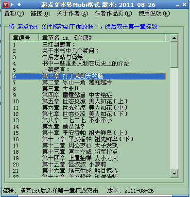

|
名称: QiDianTxt2Mobi
功能: 将起点文本文件转换为Mobi电子书(Kindel或类似电子书)，带目录 作者: 爱尔兰之狐(linpinger) 邮箱: linpinger@gmail.com 主页: http://linpinger.github.io?s=Atc_QiDianTxt2Mobi 下载: 截图:  更新日志:
普通Txt模拟起点文本格式生成简单目录: 文本内容范例: 秒杀(我是书名，位于第一行) 第xxx章 我是标题，这行可以随便 更新时间 字数： 本行必须包含前面的"更新时间"和"字数："，且必须接在标题之后 勿乞带着数十名亲卫来到了青凤岩。 原本风景秀美处都有鸾凤飞舞的青凤岩已经变得狼籍一片。 以青凤岩主峰为中心，方圆千里内连续十八重防御仙阵被伯云霆领大军攻破，每一重仙阵破碎， 都是一场天崩地裂沧海桑田的大灾祸，青凤岩四周的山峰尽皆崩塌，地面塌陷数百里的天坑数不胜数， 无数巨大的沟渠出现在大地上，黑烟毒气不断从地下喷出，衬得仅存的青凤岩主峰宛如地狱一般。 第105章 仙王驾到 更新时间 字数： 片刻后，鹰魔回来，他将手里的符牌递给南酉：“抵押了，底数为两百万金符钱。” 郭十二对金符钱没有太大的兴趣，这里的金符钱是特定的，一般没有职业者兑换那么多金符钱带走，金符钱只是一个衡量的标准，用来换取自己感兴趣的材料。 南酉吓了一跳，说道：“呃，七彩星这么贵啊？两百万金符钱很多了，应该还可以透支吧？” 我是标题 更新时间xxxxxxx 字数：xxx 片刻后，鹰魔回来，他将手里的符牌递给南酉：“抵押了，底数为两百万金符钱。” 郭十二对金符钱没有太大的兴趣，这里的金符钱是特定的，一般没有职业者兑换那么多金符钱带走，金符钱只是一个衡量的标准，用来换取自己感兴趣的材料。 南酉吓了一跳，说道：“呃，七彩星这么贵啊？两百万金符钱很多了，应该还可以透支吧？” |